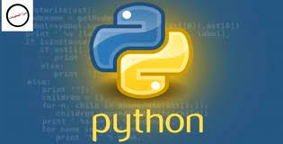

< ومنها
(1)c++ language
< c++ تعريف لغة
هي لغة برمجة كائنيةٍ متعددة الأغراض، ومهيكلة. اخترعت من قبل بيارن سترستروب في مختبرات بيل. وهي لغةٌ مماثلةٌ للغة السي C التي قام باختراعها دينيس ريتشي في أوائل سبعينيات القرن الماضي، إلا أنها أكثر أمانًا من سابقتها وتتضمن العديد من التقنيات الحديثة كالبرمجة كائنية التوجه Object Oriented programming OOP
<تاريخ اللغة
يعود تاريخ هذه اللغة إلى عام 1979، إذ قام بإنشائها برايان ستروستروب أثناء عمله في مختبرات بيل. في الواقع عمل عليها كنسخةٍ مطورةٍ من لغة سي c وسميت بدايةً (سي مع الصفوف C with classes)، وكانت 99 % من برامج سي تعمل عليها دون تغيير في الشيفرة المصدرية. تم تغيير اسم اللغة عام 1983 إلى الاسم المعروف حاليًا وهو سي بلس بلس C++ (دلالة على معامل الزيادة في اللغة وهو ++). ومع الوقت تم إضافة العديد من الميزات حتى تطورت ووصلت إلى شهرتها الحالية.
نتيجة الاهتمام الذي حظيت به اللغة منذ نشأتها فقد تميزت عن سابقتها بالعديد من المزايا التي جعلت منها لغةً مرموقةً بين أشباهها. وسنذكر بعض مزاياها تلك: لغة كائنية التوجه. محمولة. متعددة المهام. شاملة. قوية، إذ تستعمل في العديد من أنظمة التشغيل. تعتبر من اللغات الرائدة في تطوير المشاريع الكبيرة والمعقدة. ورثت مزايا لغة سي إلا أنها أضافت العديد من الأنماط البرمجية الهامة، كالتغليف Encapsulation، الوراثة Inheritance، تعددية الأشكال Polymorphism، التجريد abstraction والصفوف classes. ووفرت العديد من الوظائف المرتبطة بالدوال والتحميل الزائد. توفر مكتبة قياسية STL من الخوارزميات ووحدات الدخل والخرج
لا تخلو أي لغةٍ من بعض نقاط الضعف أو العيوب البسيطة ربما، لذا يجب علينا التنويه لها: تعتبر لغة سي بلس بلس غير آمنة. معقدة بالنسبة للمتعلمين حديثًا. صعبة التعامل والتصحيح عند استخدامها في تطبيقات الويب. لا تدعم استعادة الموارد Garbage collection. لا توفر الكثير من الدعم للمبرمج. لا يوجد مكتباتٌ افتراضيةٌ خاصةٌ بها لتصميم الواجهات الرسومية.
استخدمت هذه اللغة في العديد من البرامج والتطبيقات التي نستخدمها بشكلٍ يوميٍّ الآن، فمنها ما اعتمد على اللغة بشكلٍ كبيرٍ، ومنها ما دخلت عدة لغاتٍ مجتمعةٍ في تطويره. لكن القوة التي تتمتع بها هذه اللغة جعلتها تحتل مكانًا في برمجة معظم البرامج الناجحة والقوية منها: Firmware: برامج أنظمة الآلات والهواتف المحمولة. أنظمة التشغيل مثل Windows و Apple Os X . معظم برامج Adobe مثل الفوتوشوب photoshop وأليستريتور Illustrator والبريمير Premier. تطبيقات غوغل Google Applications: تمت كتابة بعض تطبيقات غوغل بواسطة C++ مثل نظام الملفات وغوغل كروم Google Chrome. متصفح الإنترنت Mozila Firefox. برنامج النمذجة ثلاثية الأبعاد Autodesk Maya. أمازون Amazon. البريد الإلكتروني.
(2)python language اشتق اسم بايثون من الفرقة الكوميدية البريطانية مونتي بايثون نتيجة لتأثر فان روسم بمشاهدة عروضها أثناء عمله على تطوير اللغة. تظهر مونتي بايثون من حين لآخر في شيفرة بايثون البرمجية وثقافتها. على سبيل المثال، السبام والبيض هي المتغيرات ما وراء البنية الأكثر شيوعاً في أدب لغة بايثون عوض متغير فو وبار التقليدي. يلاحظ أيضًا أن وثائق بايثون الرسمية تحيل إلى المشاهد القصيرة التي قدمتها فرقة مونتي بايثون. تستخدم البادئة باي- (بالإنجليزية: Py-) للإشارة إلى أي شيء مُتعلِّق بهذه اللغة. على سبيل المثال، تنفيذات بايثون ومكتباتها مثل باي جايم ربط برمجي لإس دي ال ببايثون، باي كيوت وباي جتك اللذان يربطان كلاً من كيوت وجتك ببايثون. نبذة تاريخية
بدأ التفكير في إنشاء لغة بايثون أواخر الثمانينيات من القرن العشرين من طرف جايدو فان روسم في معهد الرياضيات والمعلوماتية بهولندا كخليفة للغة البرمجية اي بي سي (والتي بدورها مستوحاة من سيتل). وأرادوا منها بأن تكون قادرة على معالجة الحالات الاستثنائية والتفاعل مع نظام التشغيل أميبا. بالمقابل، لم يبدأ تنفيذ الفكرة حتى ديسمبر 1989. تحمّل فان روسم مسؤولية إدارة المشروع منفردًا، وذلك بصفته المطور الرئيسي، حتى 12 يوليو 2018، عندما أعلن عن "إجازته الدائمة" من مسؤولياته كدكتاتور بايثون الخيري لمدى الحياة، وهو اللقب الذي منحه له مجتمع بايثون ليعكس التزامه طويل الأمد بصفته صانع القرار الرئيسي للمشروع. وهو يشارك الآن في القيادة عضوًا في مجلس التوجيه المكون من خمسة أشخاص. أُصدرت النسخة الثانية من يايثون (بايثون 2.0) في 16 أكتوبر 2000 مع العديد من الميزات الجديدة الرئيسية، بما في ذلك تحديد دوري (حلقي) وجامع القمامة ودعم يونيكود. أُصدرت النسخة الثالثة من بايثون (بايثون 3.0) في 3 ديسمبر 2008.وكانت مراجعة رئيسية للغة لكنها ليست متوافقة بالكامل مع الإصدارات السابقة. من ميزاتها الرئيسية : الحمل العكسي في سلاسل إصدار بايثون 2.6.x و2.7.x. تتضمن إصدارات بايثون 3 وظيفة 2to3، التي تعمل تلقائيًا (جزئيًا على الأقل) على ترجمة كود (التعليمات البرمجية) بايثون 2 إلى بايثون 3. حددت نهاية صلاحية بايثون 2.7 في البداية عام 2015 ثم أُجل إلى عام 2020 خشية عدم إمكانية نقل مجموعة كبيرة من التعليمات البرمجية الموجودة بسهولة إلى بايثون 3. في يناير 2019، انتخبت نواة بايثون النشطة من المطورين بريت كانون، نيك كوغلان، باري وارسو، كارول فايلينغ وفان روسم لتشكيل الأعضاء الخمسة "للمجلس التوجيهي" لقيادة المشروع.
1- سهولة التعلم فهي تحتوي علي تراكيب سهلة وبسيطه. 2- لغة بايثون لغة مفتوحة المصدر، وحره فيمكن توزيع نسخ منها وإجراء تغييرات عليها بحرية. 3- لغة بايثون عالية المستوي فلا تحتاج لمراجعة التفاصيل. 4- لغة محمولة فهي تعمل علي عدة منصات مثل لينكس، وماكنتوش، وويندوز. 5- كائنية التوجه وتدعم أيضا البرمجة الإجرائية. 6- ذات استخدامات متعدده، فهي تستخدم في مجالات كثيره منها: تطوير الويب بواسطة عدة أطر عمل منها اطار فلاسك و جانغو. تطوير الواجهات الرسومية من خلال استخدام عدة مكتبات مثل مكتبة كيوت أو جتك+ أمن المعلومات فهي تساعد على محاكاة عمليات الإختراق وتساعد في الادوات التي تثبت بواسطتها الترقيعات الامنية البيانات الضخمة فهي قادرة على التعامل مع البيانات بطرقة سهله و تحليلها و تتميز بكثرة المكتبات المختصه مثل باندس
(3)java language
جافا تحتفل بعيد ميلادها ال 24 هذا العام وكانت واحدة من لغات البرمجة الأكثر شعبية المستخدمة لتطوير التطبيقات من جانب الخادم. تعد جافا خيارًا عمليًا لتطوير تطبيقات أندرويد حيث يمكن استخدامها لإنشاء برامج ومنصات وظيفية للغاية. لا تتطلب لغة البرمجة كائنية التوجه بنية تحتية محددة للأجهزة، ويمكن إدارتها بسهولة، ولديها مستوى جيد من الأمان. وعلاوة على ذلك، فمن الأسهل تعلم جافا بالمقارنة مع لغات مثل C و C++. لا عجب أن ما يقرب من 90 في المئة من شركات فورتشن 500 تعتمد على الجافا لتطبيقات سطح المكتب ومشاريع التطوير الخلفية.
(4)javascript language
جافا سكريبت جافا سكريبت (المعروف أيضا باسم NodeJS) هي لغة شائعة بين المطورين الذين يحتاجون إلى العمل على جانب الخادم وجانب العميل البرمجة. وهو متوافق مع العديد من لغات البرمجة الأخرى، مما يسمح لك بإنشاء الرسوم المتحركة، وإعداد الأزرار، وإدارة الوسائط المتعددة. نظرا لسرعتها العالية وتحديثاتها السنوية المنتظمة، جافا سكريبت هو ضرب نهائي في مجال تكنولوجيا المعلومات. وتستخدم شركات مشهورة مثل نتفليكس، وأوبر، وباي بال، والعديد من الشركات الناشئة جافا سكريبت لإنشاء صفحات ويب ديناميكية آمنة وسريعة. في الواقع، يشارك تقرير مهارات المطور لعام 2018 من قبل هاكر رانك أن جافا سكريبت هي أفضل مهارة برمجة مطلوبة من قبل الشركات اليوم. جافا سكريبت موجود في كل مكان في البيئة الرقمية اليوم. لذلك فإن تعلُّم هذه اللغة منطقي تماما.
(5)kotlin languageكوتلين كوتلين (بالإنجليزية: Kotlin) هي لغة برمجة للأغراض العامة مع استدلال النوع. وهي مصممة لتكون قابلة للتشغيل البيني تماما مع جافا. علاوة على ذلك، منذ أن أعلنت أندرويد أنها لغتها الأولى، تقدم كوتلين ميزات يطلبها المطورون. ويجمع دون جهد بين ميزات البرمجة الوظيفية والموجّهة للكائنات داخله. إن التفاعل بين جافا وكوتلين يجعل تطوير الأندرويد أسرع وممتع. وبما أن كوتلين يعالج القضايا الرئيسية التي ظهرت في جافا، فقد تمت إعادة كتابة العديد من تطبيقات جافا في كوتلين. على سبيل المثال، انتقلت العلامات التجارية مثل كورسيرا وبينترست بالفعل إلى كوتلين بسبب دعم الأدوات القوي. ومع انتقال معظم الشركات إلى كوتلين، فإن جوجل لا بد أن تروج لهذه اللغة أكثر من جافا. وبالتالي، كوتلين لديه مستقبل قوي في النظام البيئي لتطوير تطبيق أندرويد. كوتلين لغة سهلة التعلم، مفتوحة المصدر، وسريعة لتطوير تطبيق أندرويد التي تزيل أي حواجز تتعلق بالتبني. يمكنك استخدامه لتطوير أندرويد، وتطوير الويب، وتطوير سطح المكتب، وتطوير جانب الخادم. لذلك، فهي لغة يجب تعلمها للمبرمجين ومطوري تطبيقات أندرويد في عام 2020.
(6)php language
PHP يستخدم PHP على نطاق واسع لتطوير الويب من جانب الخادم، عندما يطلب موقع في كثير من الأحيان معلومات من خادم. وكلغة أقدم، يستفيد PHP من نظام بيئي كبير من المستخدمين الذين أنتجوا إطارات العمل والمكتبات وأدوات التشغيل الآلي لجعل لغة البرمجة أسهل في الاستخدام. ومن السهل أيضا تصحيح كود بي إتش بي. بي إتش بي (PHP) هو رمز تشغيل مواقع الويب الموجهة نحو المحتوى مثل فيسبوك وورد بريس وويكيبيديا.